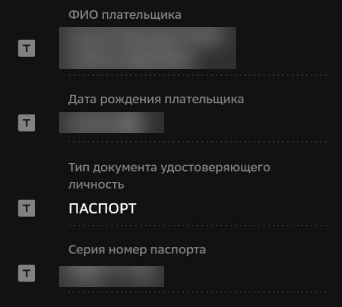

Как я пришёл в политику
В 2016 году я стал наблюдателем на выборах и увидел, как работает система изнутри. Тогда я осознал, что депутатам и чиновникам не удаётся настроить работу, которая будет полезна для людей.
В 2017 году я начал бороться против введения платных парковок в районе, когда это решение приняли без обсуждения и учёта мнения граждан.
В 2019 году я стал помогать депутату Мосгордумы Елене Янчук. Помогал в контроле капремонта, обрабатывал обращения граждан, погружался в их проблемы. Старался помочь людям, которые столкнулись один на один с бездушной чиновничьей аппаратной машиной.
В 2021 году протестовал против проекта строительства трамвайных путей в Измайлово. Противодействовал прокладке трамвайной линии по 3-ей Парковой. Мы собрали больше 3600 подписей, и проект заморожен.
В 2022 году решил, что пора избираться муниципальным депутатом. Статус мундепа позволяет представлять интересы жителей. Перед мундепами отчитываются прокурор, директора школ и полиция. И я бы хотел, чтобы в нашем муниципалитете не сидели послушные марионетки, которые просто кивают им головой.
За что я выступаю
Наша команда
Для того, чтобы влиять на происходящее в районе у оппозиционных кандидатов должно быть большинство в муниципальном совете. И на эти выборы я иду не один. Наша команда состоит из общественников, активистов и профессионалов своего дела.
Ольга Щербицкая
Коренная жительница Измайлово, выпускница МГУ, координатор «Народной школы ЖКХ» в Измайлово, председатель совета своего дома, помощница депутата Мосгордумы Елены Янчук.
Илья Алёшин
Менеджер колл-центра. Волонтёр «Народной школы ЖКХ» в районе Измайлово. Организатор просветительских мероприятий и чтений по психологии, экономике и литературе.
Поддержать кампанию
У оппозиционного кандидата нет крупных спонсоров и административного ресурса. Мы можем надеяться только на поддержку людей, которых мы и защищаем.
Уже сейчас работает большая команда из волонтёров: агитаторы, дизайнеры, водители. Все они работают без какой-либо оплаты, потому что понимают, что если сейчас ничего не делать, то через несколько лет мы обнаружим себя платящими «налоги за воздух», а за требование установить пандус можно будет получить административный штраф.
Государство максимально усложнило процесс отправки денег на избирательный счёт. Это сделано для того, чтобы вы забили и не стали поддерживать политиков, которые вам нравятся.
Процесс внесения пожертвования на избирательный счёт займёт от 1 до 5 минут в зависимости от банка.
Плакаты и листовки
Мы собрали деньги на газету и флаги и собираем дополнительные средства на агитацию, плакаты и листовки.
Каждые 100 рублей — это 30 газет или 20 листовок. Если вы откажетесь от одного кофе или пива, то нашу агитацию сможет увидеть целых 100 квартир или небольшая многоэтажка.
Спасибо за вашу
солидарность!
Нужно
75000 ₽
Собрано
51390 ₽
На что ещё собираем деньги
Агитация
Мы выпускаем агитационные листовки, в которой рассказываем о нашей команде и призываем идти на выборы.
Это особенно важно в последние дни голосования, чтобы напомнить избирателям о себе.
Штаб
Для хранения агитации, газет и лучшей координации волонтёров необходимо помещение.
Это существенно повысит эффективность кампании; кроме того, в штаб смогут приходить местные жители и рассказывать о своих проблемах.
Кто может жертвовать
Люди с двойным гражданством; те, у кого нет постоянной прописки в РФ (надо будет написать в назначение платежа: «Места жительства на территории РФ не имею»).
Кто не может жертвовать
Запрещается вносить пожертвования: иностранным и международным организациям и иностранным гражданам, лицам без гражданства, несовершеннолетним, юрлицам с иностранным участием более 30%, органам власти, госучреждениям и предприятиям, воинским частям и правоохранительным органам, благотворительным и религиозным организациям, юрлицам моложе 1 года, НКО-иностранным агентам, анонимным жертвователям.
Если вы решили пожертвовать нам деньги, будьте очень внимательны, так как российское законодательство специально устроено так, чтобы пожертвовать кому-то легально было непросто. Если у вас возникнут какие-то вопросы по инструкции, то пишите на нашу почту izmailovo4people@gmail.com
Как осуществить пожертвование на избирательный счёт?
Одно физическое лицо не может перевести суммарно более 10 000 ₽.
Для физических лиц — пользователей «Сбербанк Онлайн»
- В разделе «Главный» введите в поиске «Солуянов Глеб Владимирович», выберите выданный поиском вариант.
- Выберите назначение платежа «Пожертвование» и нажмите «Продолжить».
- Выберите регион, где вы зарегистрированы и введите адрес регистрации с точностью до квартиры.
К примеру: город Москва, ул. Первомайская, д. 73, кв. 55.
Проверьте данные, если они будут введены некорректно, то мне придется перечислить ваши деньги в бюджет. Нажмите «Продолжить». - Внимательно проверьте корректность указанных данных, система должна заполнить их автоматически.
Помимо адреса и региона прописки должны быть указаны: ФИО плательщика, дата рождения плательщика, гражданство (ВНИМАНИЕ: Пожертвования принимаются только от граждан Российской Федерации), тип документа, удостоверяющего личность (чаще всего это паспорт РФ), серия и номер документа (если это паспорт) или другие данные удостоверения личности в иных случаях.
Проверьте корректность заполненных данных. Если всё верно, нажмите «Продолжить».  - Введите сумму платежа (ВНИМАНИЕ: Суммарное количество денег, которое может отправить физическое лицо не должно превышать 10 000 ₽).
Нажмите «Продолжить». - На этом этапе у вас есть возможность проверить все данные еще раз. Если всё верно, нажмите «Оплатить». Пожертвование осуществлено!
Для физических лиц — пользователей других банков
Если вы не пользуетесь Сбербанком, то можете сделать банковский перевод по реквизитам избирательного счёта Глеба Солуянова в любом онлайн-банке или банковском отделении, не открывая счёт.
Получатель: Солуянов Глеб Владимирович Номер счёта: 40810810038009417144 БИК: 044525225 Корр. Счет: 30101810400000000225 Назначение платежа: Добровольное пожертвование в избирательный фонд от: тут полностью укажите ФИО, гражданство (только РФ), дату рождения, серию и номер паспорта, адрес регистрации.
Пример: Добровольное пожертвование в избирательный фонд от: Иванов Иван Иванович, 28.04.1985 г.р., г.Москва, ул. Первомайская, д. 73, кв. 55, Паспорт: 45 53 088829, Г: RUS
В строке «Назначение платежа» обязательно должны присутствовать:
- Указание на добровольность пожертвования
- Паспортные данные: ФИО, гражданство, дата рождения, серия и номер паспорта
- Адрес регистрации
- В некоторых банках дополнительно требуется указать, что платёж не облагается НДС (прописать «НДС не облагается»/«Без НДС»)
В графу «Назначение платежа» можно вписать не более 180 символов, поэтому вам придётся сокращать. Однако следите, чтобы никакая информация не потерялась, иначе платёж будет признан анонимным и я буду вынужден, в соответствии с законом, перевести его в бюджет.